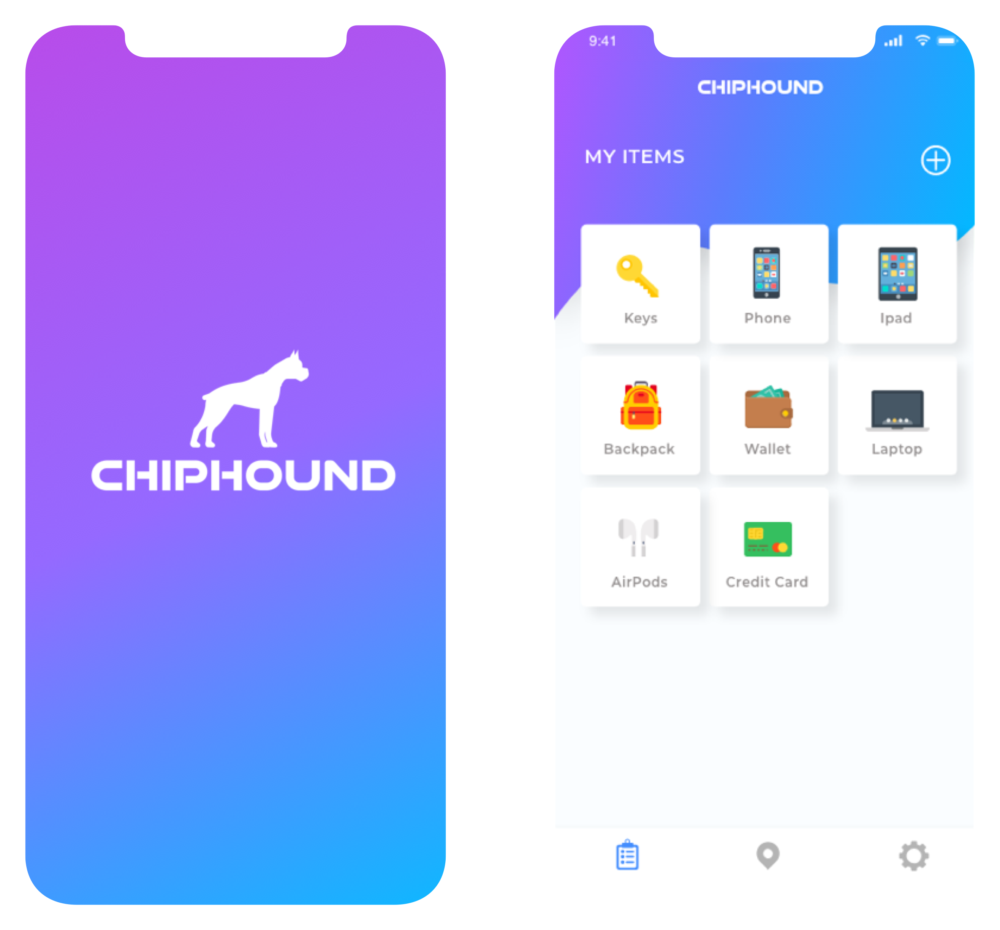
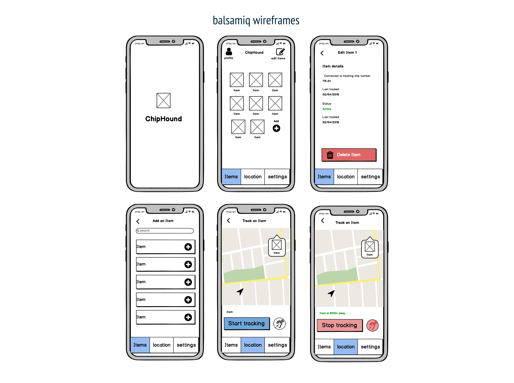
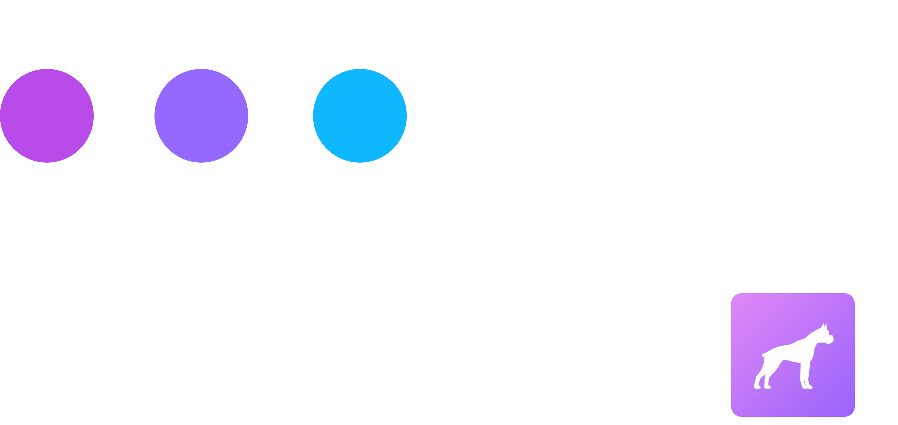
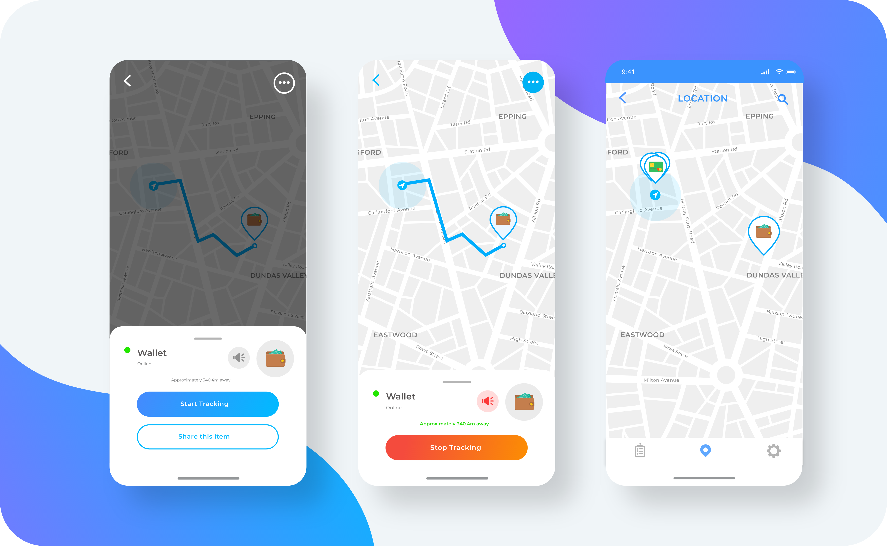

The ChipHound app is a complimentary mobile platform that comes with the ChipHound sticker,
a tracking adhesive that allows people to find any lost belongings. Simply attach the sticker
to any personal belongings, and then track it through the ChipHound app.

01. The goal
Our team entered a competition to see if we could win the most innovative product award.
My mission for ChipHound was to showcase a prototype of our app that reflected our revolutionary product.
02. Market research
1. Google form surveys
2. One-on-one interviews with different audiences
03. Who was it for?
Millennials, parents and travellers- our market research found that these 3 segments were
the most likely to misplace their belongings from things like their phones to underwear!
We wanted ChipHound to be the product that would solve the simple problems in everyday life,
starting with saving people from losing their valuable belongings.
04. The problem
1. 86% of interviewees in this target found that losing their belonging is an acute problem
2. There was no functionality or visual identity to our application yet
3. Create an application that would be easy to navigate so that the targeted audience can focus on
finding their belongings rather than be demotivated and stressed whilst using the app
05. The solution
Low fidelity wireframes
Together with my team, we developed the main functionality of the mobile application on Balsamiq,
which were to:
- Add personal belongings
- Track an item
- Trigger an alarm when the user starts tracking the item.

Visual identity
Inspired by the invention of the name ChipHound itself and coloured gradients, I designed a
visual identity for the app.

High fidelity wireframes
I compiled some feedback from my team and a few users about the visual identity and then
created high fidelity wireframes on Adobe XD.

The outcome and prototype
We won first prize for UNSW’s Innovation and Entrepreneurship course!
The judges were really impressed by our prototype and believed that it would be feasible in the real world.
05. Reflections and takeaways
I found that this project was an exciting learning experience (!) as
I was the only designer in the team and it gave me a lot of
freedom to develop the design of the app. However, because of the short time frame, I could not
fully develop the app by adding more functionality e.g allowing customers to track belongings
through a friend's phone. If I had more time, I would have loved to conduct more user testing
to create a better user journey and design a desktop version of the app so the users could have more
mediums to track their items.